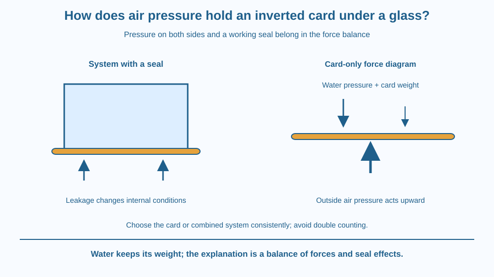

Explain a water-and-card demonstration using pressure difference, a continuous seal and force balance. Distinguish pressure beneath the card from the water pressure above it. Recognise why air leakage and the arrangement inside the cup affect the result rather than saying that water has lost its weight.
An adult fills a small cup with water, covers it with a suitable card and inverts it above a basin. Under suitable conditions, the card can remain in place when the supporting hand is removed.
The water is still there, and gravity has not switched off. Air beneath the card can exert an upward force. To explain the observation, however, it is not enough to say that air pressure exists. Pressure also acts within the water above the card. The difference between those pressures and the integrity of the seal matter.
Air exerts atmospheric pressure on exposed surfaces. The underside of the inverted card is exposed to surrounding air, producing an upward force over the opening. The water above the card exerts a downward pressure force, and the card also has its own weight.
For the card to remain supported, the upward contribution and any edge effects must balance the downward contributions. In a simplified model, the relevant pressure comparison is outside air beneath the card versus water just above it. Counting only one pressure gives an incomplete explanation.
The internal water pressure is linked to conditions higher inside the inverted cup. A small movement of the water or expansion of a trapped gas region can reduce pressure in that region. The water column then has a pressure distribution compatible with the lower internal pressure and its own weight.
This is why the demonstration can depend on fill level, cup height, trapped air and sealing conditions. The system must settle into a force balance; it does not work merely because outside air is always stronger than any water anywhere.
The seal at the rim helps prevent air from entering freely. Surface tension and wet contact at the edge can help maintain that seal. If an air pathway opens, the internal conditions can change and the card may no longer remain supported.
Do not add the full water weight a second time to a calculation that already uses the correct water pressure at the card and its associated system conditions. Choose a consistent object for a force diagram: the card alone or the combined water-card system.
The card's stiffness and shape matter too. A card that bends away from the rim may open a leak. A damaged rim or unsuitable material can make the demonstration fail even when the general pressure principle is correct.
This is different from saying an object is pulled upward by an invisible suction substance. A lower-pressure region allows surrounding pressure to produce an unbalanced push. The effect is explained through forces and pressure differences, with gravity still acting throughout.
Draw the card alone as a horizontal rectangle. Put an upward arrow beneath it for outside-air pressure and a downward arrow above it for the water's pressure. Add the card's weight as a separate small downward arrow.
Keep the water's full weight out of this card-only diagram unless you have replaced the pressure treatment with a consistent combined-system model. Otherwise the same contribution can be counted twice.
Add a rim-seal symbol and an air-leak path in a second drawing. The leak changes the internal conditions, so the force arrows may no longer balance. This model connects a visible failure with a physical cause rather than declaring the demonstration random.
The SVG shows an inverted unbreakable cup, water, a card and a sealed rim. Separate arrows above and below the card represent the opposing pressure forces. The text zones name the pressures at the card rather than comparing air with an unrelated point elsewhere in the cup.
A second small drawing introduces a leak at the edge. Its caption explains that internal conditions can change when air enters. The water is not shown becoming weightless.
The diagram is conceptual, not a reliable construction specification. Real edge forces, material flexibility and trapped gas can affect the result.

Pressure differences are involved in many everyday devices that seem to suck. A surrounding fluid pushes toward a lower-pressure region; the word suction can hide that force balance if used without explanation.
The inverted-card demonstration is useful precisely because it can fail when the seal changes. That failure can be evidence about the setup, not proof that atmospheric pressure stopped existing. Reproducible demonstrations require controlled conditions as well as a correct general principle.
Do not use the idea to lift heavy objects, improvise vacuum equipment or investigate sealed hot containers. A small water demonstration above a basin is enough to examine the model safely.
Do this with an adult. Use a small unbreakable cup, room-temperature water, a stiff smooth card and a basin. Keep everything away from electrical equipment and expect spills. Do not use glass or hot water.
The demonstration is not guaranteed to work with every cup and card. A failure is an observation to describe. If suitable materials or supervision are unavailable, use the paper force diagram instead.
Why does the statement “air pushes upward” fail to explain the whole observation? Identify the downward pressure contribution and the card's weight.
Now imagine an edge bends away from the rim. Explain how admitting air can change the internal conditions. Keep gravity in your model; the water has not become lighter simply because the card temporarily stays in place.
What acts upward on the underside of the card?
Answer: A — Outside air exerts an upward pressure force on the exposed underside.
Why does the rim seal matter?
Answer: C — An air leak can alter the internal pressure conditions needed for balance.
A card bends and air enters. What is a reasonable prediction?
Answer: B — Leakage can change pressures and edge conditions so the card no longer stays supported.
Create two labelled force diagrams: one for the card with a functioning seal and one after an air leak changes the system. State which object each diagram describes.
Your explanation must avoid three errors: ignoring water pressure above the card, declaring gravity absent, and counting the water's weight twice. Add one practical setup limitation, such as card stiffness or rim leakage, without claiming a universal guaranteed result.
A successful demonstration depends on a whole system finding a balance, not on one dramatic force acting alone. The outside air was present before the cup was inverted too. What changes is the arrangement of pressure, liquid, trapped gas and sealing, which makes the same surroundings capable of supporting a different configuration.
An inverted card can stay when pressure forces and edge conditions balance its downward loading; a working seal matters, and the water never loses its weight.